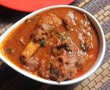
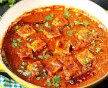

What inspires you
Cooking is more than just preparing meals — its an expression of creativity, culture, and care. What truly inspires me about food and cooking is the ability to bring people together, to create comfort, joy, and memories through something as simple as a shared dish.
popular recipies
chicken curry

Description
Chicken curry is a delicious and aromatic dish that holds a special place in many cuisines, especially across South Asia. It is made by simmering tender chicken pieces in a thick, spiced gravy typically prepared with onions, tomatoes, garlic, ginger, and a blend of spices such as turmeric, coriander, cumin, chili powder, and garam masala.
read moremutton curry
Description
mutton curry is a delicious and aromatic dish that holds a special place in many cuisines, especially across South Asia. It is made by simmering tender chicken pieces in a thick, spiced gravy typically prepared with onions, tomatoes, garlic, ginger, and a blend of spices such as turmeric, coriander, cumin, chili powder, and garam masala.
read morepanner curry
Description
panner curry is a delicious and aromatic dish that holds a special place in many cuisines, especially across South Asia. It is made by simmering tender chicken pieces in a thick, spiced gravy typically prepared with onions, tomatoes, garlic, ginger, and a blend of spices such as turmeric, coriander, cumin, chili powder, and garam masala.
read morecontact
Reference Contact (Restaurant Industry)
Name: Mr. Gowri Shankar
Position: Head Chef / Restaurant Manager
Restaurant Name: Spice Garden Family Restaurant
Phone: +91-98765-43210
Email: rajeshkumar@spicegarden.in
Address: No. 22, MG Road, Bengaluru, Karnataka – 560001
about us
About Us
Welcome to Gowri Shankar Restaurant, where every meal is a celebration of authentic flavors and heartfelt hospitality. Founded with a passion for traditional Indian cuisine, our restaurant is known for its rich taste, comforting ambiance, and commitment to quality.
At Gowri Shankar Restaurant, we specialize in South Indian delicacies, North Indian classics, and signature dishes like our famous Chicken Curry and Masala Dosa. Every dish is prepared with fresh ingredients, hand-ground spices, and a touch of love — just like home.
Whether youre joining us for a family dinner, a casual lunch, or a special occasion, our team is here to make your experience memorable. Come savor the flavors of tradition at Gowri Shankar Restaurant — where food brings people together.